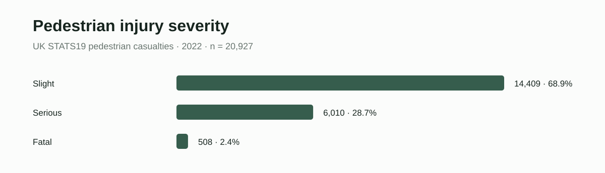
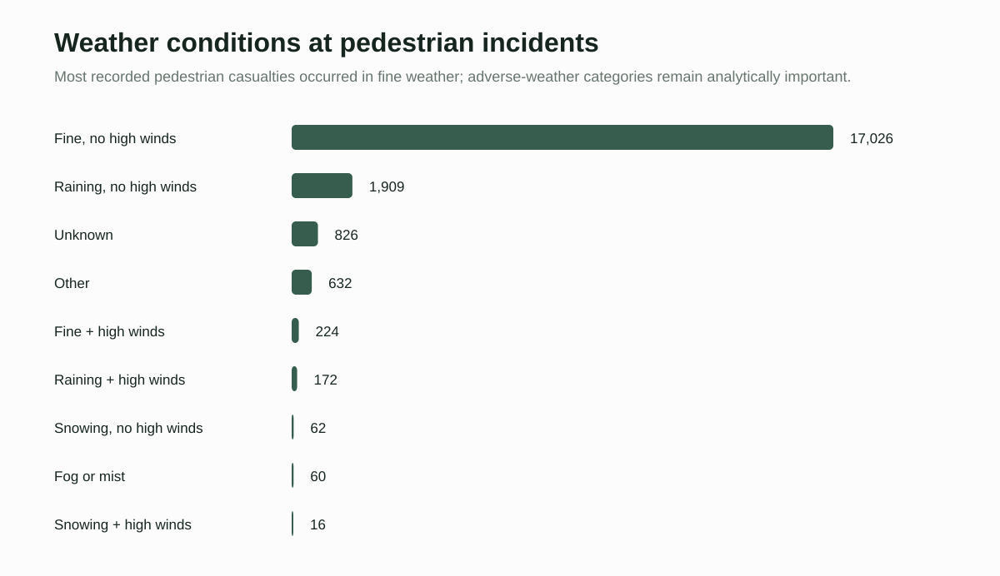
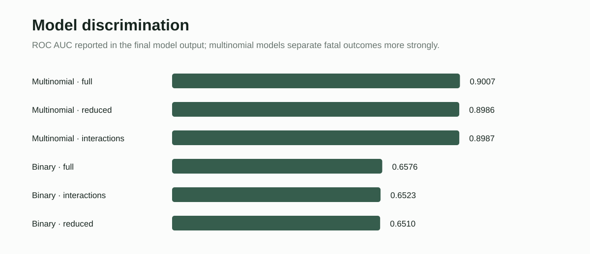

Why this matters
Pedestrian injury severity emerges from interactions among environmental conditions, road infrastructure, vehicle movement, exposure and human vulnerability. The project treats weather and road-surface conditions as part of a broader climate-sensitive transport-safety system rather than isolated background variables.



Analysis workflow
The R workflow downloads collision, casualty and vehicle records with stats19, merges them by accident index, filters pedestrian casualties, and engineers temporal and severity variables. Modeling then combines weather, lighting, road surface, pedestrian movement, crossing facilities, speed limit, urban/rural setting, vehicle manoeuvre, age, sex, hour and day of week.
The analysis compares binary logistic models for fatal/serious versus slight injury with three-level multinomial models for slight, serious and fatal outcomes, plus interaction specifications. ROC/AUC and confusion-matrix diagnostics are used to compare discrimination. The portfolio emphasizes the reproducible analytical workflow and results rather than reproducing the original student dissertation.
Climate-safety interpretation
The project is useful as a climate-risk case study because adverse weather, visibility and road-surface conditions can alter both physical road conditions and road-user behavior. At the same time, the descriptive counts show why weather categories should not be interpreted as causal risk by themselves: most pedestrian casualties occurred during fine weather, reflecting exposure as well as hazard. Multivariable modeling is therefore central to separating environmental context from speed, infrastructure, temporal and demographic factors.
Reproducible implementation
The cleaned project workflow is organized around data acquisition and preparation, exploratory summaries, severity modeling, alternative predictive specifications and model evaluation. The public repository contains the reconstructed R workflow and derived result tables; dissertation and student-assessment materials are excluded.